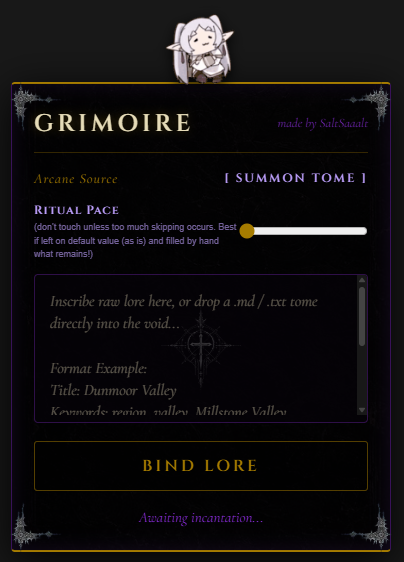

Artifacts, Digital Curiosities & Sound Invocations
Within these bound pages rest the artifacts, tools, and synthesized frequencies crafted by Ionuț Roșcan.
Treat each script as an invocation—coded to bend browsers, process arcane structures, and shape sonic airwaves.
✦ NON OMNIS MORIAR · NIHIL FIT EX NIHILO ✦
🜔I am a programmer, sound designer, and music producer obsessed with creating strange, tangible things that bridge the gap between utility and imagination.
If an idea can be constructed, automated, visualized, or sculpted into raw sonic resonance, chances are I'll build it.

Forged to automate lorebook ingestion on Clank.world. Bypasses reactive state barriers by piping raw input via the Chrome DevTools Protocol (chrome.debugger).
Download .ZIP → Extract → brave://extensions → "Load unpacked"
Title: [Entry Name]
Keywords: [tag1, tag2]
Content: [Lore description...]manifest.json: Manifest V3 with CDP debugger permissions.background.js: Dispatches OS-level Input.insertText streams.content.js: DOM automation, drop-zone parser & sequencer.The only artifact currently released for use. A Chromium/Brave browser extension for importing lorebook entries into Clank.world.
Not forged yet. A planned utility for cleaning, structuring, and validating malformed JSON payloads.
The archive grows as real artifacts are forged. Ideas may be recorded here before they are built.
No structural anomalies detected.
Click the seal to bind your presence